🌐 English edition: HOW_TO_USE.en.md
本手册采用一主两分结构： - 主手册（本文）：定位、快速上手、三线导航、通用能力（伴生服务 / Docker / PWA / 小程序 / 可靠性 / FAQ） - 分册一：Agent 创意画布（主线） —— 画布全部能力与操作 - 分册二：电商带货全链路（含短剧 legacy） —— 六步工作流、双工作室、引擎配置、剪映交付、回流看板
WebLockShot 是一款面向竖屏短视频与电商视觉创作者的 多 Agent 闭环短视频生成平台， v2.4 起以 Agent 创意画布为主线（自由创作空间），同时保留成熟的电商带货全链路与 legacy 的 剧情短剧粗剪台。
过去创作一条符合平台推流机制的电商爆款短视频，通常面临如下痛点：
WebLockShot 实现了全链路整合突破：从商品卖点输入、爆款结构套用、双 Agent 剧本研讨、9:16 动态预演、 自建 ComfyUI / 商业 API 渲染生成，到剪映草稿工程声画字三轨微秒自动对齐，全流程浏览器内闭环！ 画布模式进一步把这条链路拆成可自由摆放、可沉淀复用、可被本地 Agent 驱动的节点拓扑。
| 环节 / 能力 | 传统人工制作模式 | 一般套壳 AI 工具 | WebLockShot 工作台 |
|---|---|---|---|
| 爆款规律把控 | 编导凭个人感觉拼凑 | 单一文本粗糙扩写 | 内置 5 大爆款结构套路库 + 黄金 3 秒强对抗钩子库（Zod 强约束） |
| 脚本编导质量 | 单人盲写，缺乏审校 | 直接输出一段长文本 | ScriptWriter + ScriptCritic 双智体剧本推演与严苛批判打分 |
| 生片前可控预演 | 脑内想象或黑屏等待 | 无法预演，直接开盲盒 | 9:16 GSAP 动态分镜舞台，毫秒级模拟镜头运镜与转场节奏 |
| 渲染算力支持 | 仅能在特定官方网页手动点 | 仅对接 1 家闭源云端 API | 六擎可选：Mock、可灵、即梦、ComfyUI 私有显卡 (Wan 2.1)、Runway、Luma |
| 出片成本 | 商业 API 接口费昂贵 | 充值代币高溢价抽成 | 0 接口费自由：直连本地 RTX 4090 / A100 ComfyUI，边际成本趋向于 0 |
| 防重与资金安全 | 连击重复扣费，失败不管 | 失败扣点不予返还 | 工业级两阶段事务钱包（预冻结 → 成功核销 / 失败回滚）+ 意图指纹幂等 |
| 创意复用 | 每次从零开始 | 无沉淀机制 | Skill 工作流包：框选节点导出 manifest，导入即重建拓扑只填新输入 |
| 剪辑工程交付 | 人工逐轨拖拽、切片对齐 | 仅提供独立 MP4 下载 | 剪映 / CapCut 草稿工程直出：视频轨 + 旁白轨 + 花字字幕轨微秒级自动化对齐 |
sessionStorage，绝不上传任何第三方服务器；?view=sell / ?view=drama 进入另两条线。适合拥有本地高配 GPU（RTX 3090/4090/A100）或需内网部署的团队：
# 克隆仓库
git clone https://github.com/QWQcool/WebLockShot.git
cd WebLockShot
# 安装依赖
npm install
# 启动本地开发服务 (支持 ComfyUI 自动反向代理)
npm run dev
# 质量检测（node 单测 + vitest UI 冒烟）
npm test
启动后在浏览器打开 http://localhost:5173 即可进入工作台。
| 产品线 | 进入方式 | 定位 | 详细指南 |
|---|---|---|---|
| 🎨 Agent 创意画布 | 默认入口 / ?view=canvas |
主线：自由创作空间，节点即管线，Skill 沉淀复用，3D 运镜台，MCP 双向 | 分册一 |
| 🛒 电商带货全链路 | 顶栏「🎯 带货工作台」/ ?view=sell |
次线：成熟稳定的六步工业化流程 + 双工作室 + 剪映交付 | 分册二 |
| 🎭 剧情短剧粗剪台 | 顶栏「🎭 剧情短剧」/ ?view=drama |
legacy：保留兼容与零回归，新创作建议走画布 | 分册二 · 第 6 节 |
该选哪条？
纯前端版在 GitHub Pages 上无法直连 ComfyUI 与视频平台 API（跨域限制），也无法替你把草稿写进本地磁盘。
伴生服务（纯 Node，运行时仅依赖 pino 日志库）解决这两件事，并提供一系列「预留开关」能力
（不设置任何 WLS_* 环境变量 = 与纯前端现状完全一致的本地默认模式）：
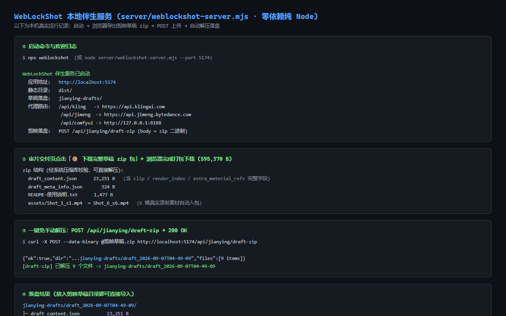
npm run build && npm run start:server # 默认 http://localhost:5174
# 等价 npx 形态：npx weblockshot
# 自定义参数：node server/weblockshot-server.mjs --port 8080 --dist ./dist --draft-dir ./jianying-drafts
Windows 用户可直接双击根目录 start-weblockshot.bat（自动安装依赖 → 构建 → 启动）。
| 能力 | 说明 |
|---|---|
| 静态托管 | 托管 dist/ 生产构建，打开 http://localhost:5174 即用 |
| API 反代 | /api/kling、/api/jimeng、/api/comfyui 三个前缀反向代理 |
| 剪映草稿落盘 | POST /api/jianying/draft-zip（body 为 zip 二进制），自动解压到 --draft-dir 指定目录 |
| 语音合成 | POST /api/tts：Edge-TTS 合成旁白 mp3 落盘（默认开；WLS_TTS=off 关闭），GET /files/tts/<file>.mp3 回读 |
| 成片合成 | POST /api/render：ffmpeg 合成视频 + 音轨 + 字幕成 mp4（默认 auto 探测；WLS_FFMPEG=off 关闭），GET /files/render/<file>.mp4 回读 |
| 记忆记录 API | GET/POST/DELETE /api/memory/records：WLS_STORAGE=sqlite 时启用，否则 501（前端自动降级本地 IndexedDB） |
| 连接器 API | GET /api/connectors + POST /api/connectors/:id/auth|run：能力位 connectors: 'interface' \| 'ready' |
| MCP 桥接（可选依赖） | /api/mcp/*：画布拓扑镜像 + Agent 操作队列；未装 SDK 时 501 + 安装指引 |
| 健康检查（预留） | GET /healthz 返回版本 / 存储模式 / uptime / 密钥注入模式 / 能力位（tts、ffmpeg、memory、connectors、mcp） |
| 会话存储 API（预留） | PUT/GET/DELETE /api/sessions/:id，配合前端 VITE_BACKEND_URL 的服务端模式；WLS_STORAGE=sqlite 时落盘持久化 |
| LLM 反代（预留） | 设置 WLS_LLM_TARGET 后 /api/llm 反代至目标 LLM API；未设置返回 501 |
| 密钥注入（预留） | 设置 WLS_KEYS（JSON）后反代注入真实密钥头，小程序/无密钥客户端也能出片；未设置 = 透传模式 |
| 结构化日志 | pino JSON 行输出，级别经 WLS_LOG_LEVEL 控制 |
全部预留开关的环境变量表见主仓 README「🚀 生产部署」章节。
方式 A：工作台内一键落盘（推荐）
/healthz——在线时导出卡片出现 📤 发送到伴生服务落盘 按钮；/api/jianying/draft-zip，服务端自动解压；
按钮下方显示落盘路径（savedPath）；方式 B：curl 手动落盘
curl -X POST http://localhost:5174/api/jianying/draft-zip \
-H "Content-Type: application/zip" --data-binary @<工程名>_剪映草稿.zip
# → { ok: true, savedPath: "...", files: [...] }
curl -X POST http://localhost:5174/api/tts \
-H "Content-Type: application/json" \
-d '{"text":"你的旁白台词","voice":"zh-CN-XiaoxiaoNeural","rate":"+10%"}'
# → { "url": "/files/tts/xxx.mp3", "bytes": 38736, ... }
zh-CN-XiaoxiaoNeural）；rate 支持相对语速（如 +20%）；text ≤ 5000 字符；产物经 GET /files/tts/<file>.mp3 回读；voice_<镜号>.mp3 放进草稿包 assets/ 补齐缺失旁白。curl -X POST http://localhost:5174/api/render \
-H "Content-Type: application/json" \
-d '{"videoUrl":"/files/tts/video.mp4","audioUrl":"/files/tts/xxx.mp3","title":"我的成片"}'
# → { "url": "/files/render/render_xxx.mp4", "bytes": ... }
mov_text；WLS_RENDER_TIMEOUT_SEC 可调）；file:// 与内网地址（SSRF 防护），远程下载上限 500MB。(intent, shotId, provider, prompt, duration, ratio) 计算唯一幂等指纹；queued → running → succeeded/failed（失败后允许 failed → queued 重试）
由 JOB_STATUS_TRANSITIONS 转移表守卫；非法迁移（含 succeeded 终态自迁移、越级迁移）直接抛错拦截；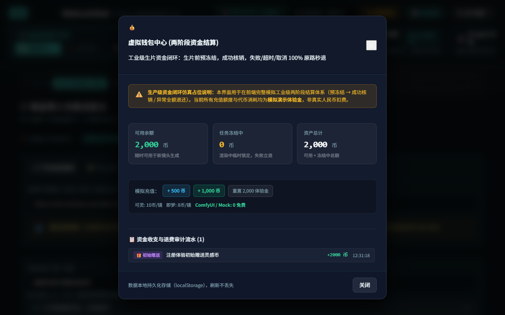
画布与带货共用同一条钱包管线（
useVideoPipeline，全站只此一份实现）。
--listen 参数（python main.py --listen 127.0.0.1 --port 8188）；/api/comfyui 穿透跨域，
请确认通过 http://localhost:5173 访问，而不是直接双击打开本地 HTML 文件。sessionStorage，会话数据存 IndexedDB，均不上传第三方服务器；git clone https://github.com/QWQcool/WebLockShot.git
cd WebLockShot
docker compose up --build # 首次构建约 2~4 分钟
启动成功后：
http://localhost:8080（端口在 docker-compose.yml 的 ports 中调整）http://localhost:8080/healthz/healthz），异常自动重启所有 WLS_* 环境变量均为「预留接口做好不用」原则的实现——不设置任何变量 = 本地默认模式：
environment:
- PORT=5174
# 会话持久化（预留）：sqlite 落盘到容器 /app/data 卷
- WLS_STORAGE=sqlite
# 语音合成（默认 on）：/api/tts Edge-TTS 出 mp3，产物落 /app/data/tts 卷
# - WLS_TTS=off
# 成片合成（默认 auto）：镜像已内置 ffmpeg，/api/render 出 mp4
# - WLS_FFMPEG=auto
# LLM 反代（预留）：设置后 /api/llm 反代到目标
- WLS_LLM_TARGET=https://api.openai.com
# 密钥注入（预留）：服务端持有真实密钥，客户端免配 Key（小程序轻端依赖此机制）
- WLS_KEYS={"kling":"Bearer ak-xxx","llm":"Bearer sk-xxx"}
compose 内含 Caddy 反代注释模板：取消注释、编写 Caddyfile
（your-domain.com { reverse_proxy weblockshot:5174 }），Caddy 将自动签发并续期 Let's Encrypt 证书；
也可按同思路换 nginx + certbot。
多阶段构建：阶段 1（node:22-slim）npm ci + tsc -b && vite build 产出 dist/；
阶段 2 运行层（node:22-alpine，已内置 ffmpeg）仅含 dist/、server/ 与生产依赖（不含任何 devDependency）。
./data（TTS 音频/成片/sqlite 会话库）与 ./jianying-drafts（剪映落盘）已挂载持久化卷。
CI 每次 push 均执行「只 build 不 push」的镜像构建验证 job。
miniapp/ 目录提供微信小程序（weapp）轻端（Taro 4 + React 18，主分支目录而非独立分支），
覆盖「录入商品 → 任务进度 → 看片交付」轻链路。
小程序端不做剪映草稿导出（需桌面文件系统能力）、不做 Mock 引擎与 GSAP 动画体系； 看片后复制视频链接，回桌面工作台「审片交付」继续完成剪映交付。 完整边界说明见 miniapp/README.md。
@domain 别名直接复用主仓 src/domain 零依赖领域模块（轮询窗口 pollingConfig 等），主仓 src 层面零改动；TARO_APP_API_BASE 指向的后端 /api 反代提交（伴生 server 或云端网关）；WLS_KEYS 注入；未配置时为透传模式，远端将显式返回 401。cd miniapp
npm install
npm run build:weapp # 不依赖微信开发者工具即可完成编译，产物在 miniapp/dist/
touristappid 仅限本地开发者工具预览；web-view 与部分高级接口需企业主体账号。本版本补齐了完整的测试工程化（T 线），全部可一键复跑：
| 命令 | 作用 | 当前结论 |
|---|---|---|
npm test |
node 单测 + vitest UI 冒烟 | 400 + 18 项，0 失败 |
npm run e2e |
画布 E2E 套件（真实鼠标路径 + 隔离 storage） | 13/13 步通过；Playwright 缺失时优雅跳过 |
npm run test:coverage |
关键纯函数层覆盖率基线（80% 门槛） | 10/10 达标（coverage.md） |
npm run perf |
画布 / 记忆图谱 / 3D chunk / Skill 市场性能基准 | 见 perf.md（含优化建议） |
npm run a11y |
chromium + webkit 核心链路 + axe（WCAG 2.0 A/AA） | 双引擎 5/5，axe 严重项 0（a11y.md） |
npm run degrade |
六类能力缺失路径的降级 / 迁移矩阵 | 6/6 通过（degrade-matrix.md） |
npm run test:chaos |
边缘情况冒烟（畸形 URL / 超限 body / 上游断流） | 进程全程存活 |
npm run shots |
实机截图采集（本手册与 README 的配图来源） | 落盘 docs/screenshots/ |
本手册的 PDF 版本由
python docs/build_how_to_use_pdf.py生成（主手册 + 两分册合并排版）。
📄 开源许可：自有代码 MIT；第三方依赖各自许可（tldraw 为商业许可、GSAP 为自有免费许可）， 完整清单见
NOTICE。
主手册：HOW_TO_USE.md · 带货线分册：HOW_TO_USE.commerce.md English: HOW_TO_USE.canvas.en.md
默认入口就是画布——访问部署地址（或 npm run dev 的 http://localhost:5173）即进入 Agent 画布；
深链 ?view=canvas 直达，?view=sell / ?view=drama 进入另两条线。
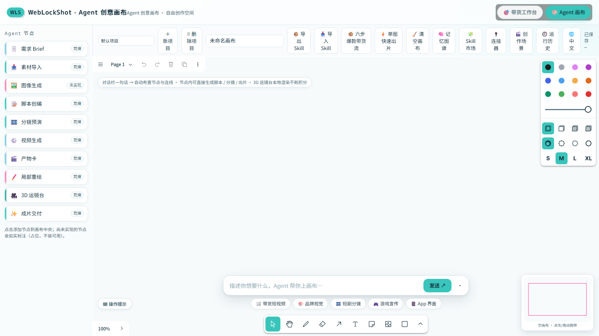
界面分区：
| 区域 | 内容 |
|---|---|
| 顶栏 | 品牌、模式切换（带货 / 短剧 / 画布）、语言切换 |
| 左侧 | Agent 节点面板（点击即在画布中央落节点，标题悬停显示该节点能力说明） |
| 中间 | tldraw 无限画布（页面 / 缩放 / 撤销重做 / 便签图形等原生能力全部可用） |
| 工具条 | 项目切换与新建删除、画布名称、导出/导入 Skill、官方 Skill 快捷入口、清空、记忆图谱、Skill 市场、连接器、创作场景、MCP 徽章、语言、保存状态 |
| 右下 | 小地图（Canvas2D 自绘，点击/拖动导航） |
| 底部 | 对话栏（可一键收起为右下角胶囊，露出 tldraw 底部工具条） |
画布文档保存在浏览器
localStorage，400ms 防抖落盘，多标签页通过 storage 事件实时同步。
开场层（首访叠加，之后折叠为底部对话栏）：
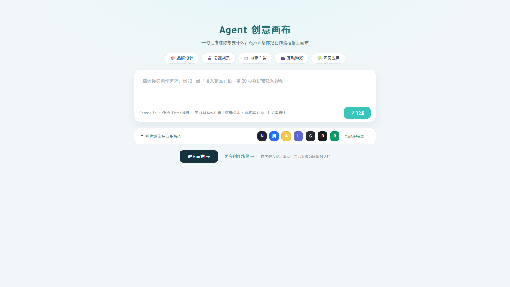
创作场景画廊（工具条「🎬 创作场景」）：
六类场景卡片（品牌设计 / 电商物料 / 影视文娱 / 游戏内容 / 产品 UI-UX / 宣传物料），每张卡片两个动作：
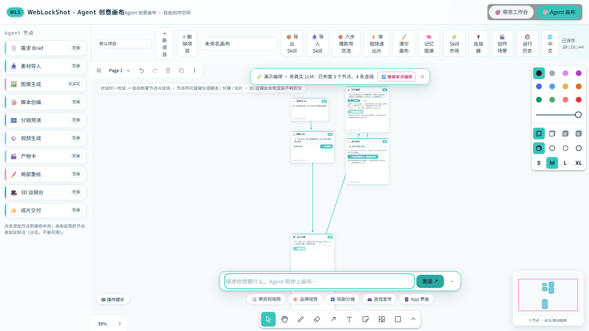
编排只会创建「已就绪」的节点类型；灰态节点不会被编排创建。
10 种节点：需求 Brief、素材导入、图像生成、脚本创编、分镜预演、视频生成、产物卡、局部重绘、 3D 运镜台、成片交付。
brief → product → script → storyboard → generate → asset → deliver；
product → generate（单图直出）、asset → edit（重绘）、stage3d → storyboard|generate（3D 出片）等。useVideoPipeline
（钱包两阶段事务 / 熔断 / 幂等 / 轮询 / 退款）。blob: 一律拒绝持久化（跨刷新失效），
画布文档里只存轻量引用。‹ v 2/3 › 可来回切换、回退；上限 20 版，回退后可继续叠加新重绘。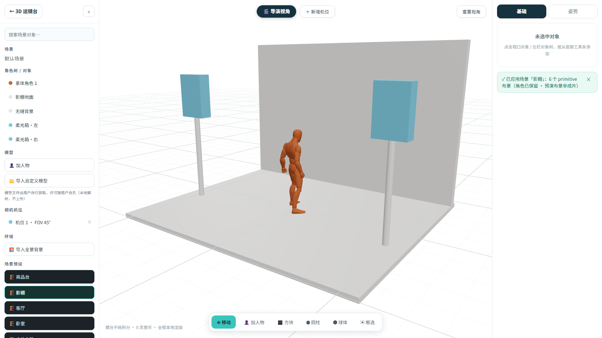
动作预设提供 8 种（待机 / 走路 / 慢跑 / 冲刺 / 跳舞 / 坐姿 / 跳跃 / 交谈），全部来自内置素体 的真实动画片段；参考稿里的「挥手 / 转身」在 CC0 素材库中无对应片段，如实替代、不伪造。 播放动画期间会暂停姿势叠加（绝对姿态会打架）。
沉淀：框选 ≥2 个节点 → 工具条「📦 导出 Skill」→ 得到 manifest JSON：
复用：工具条「📥 导入 Skill」→ 校验通过后整批上画布：
市场（工具条「🧩 Skill 市场」）：
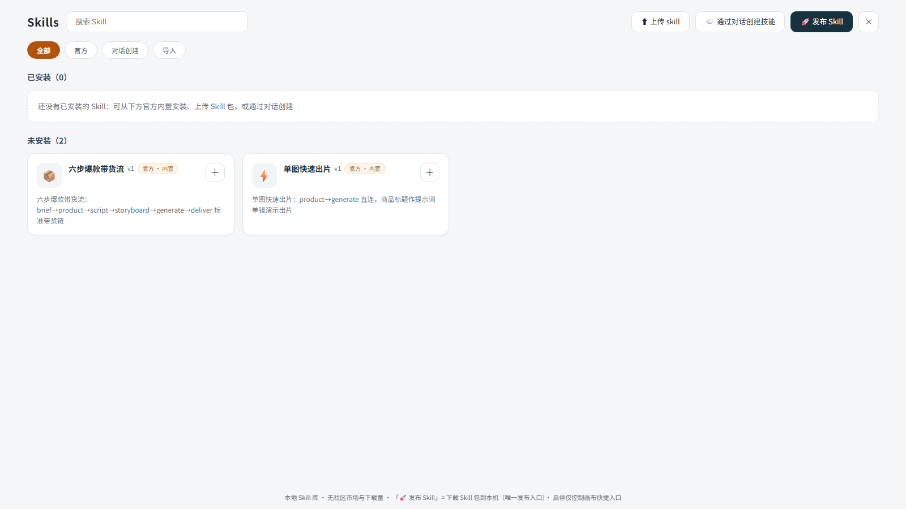
记忆系统：脚本创编时按你的历史胜率加权采样钩子；命中历史数据时节点上显示 「📊 本条建议来自你的历史数据」徽章（没有历史数据就不显示）。
WLS_STORAGE=sqlite 启动 → 记录走 /api/memory/records，
/healthz 能力位 memory:'sqlite'；computeWinRates，全站只此一份）。记忆图谱（工具条「🧠 记忆图谱」）：
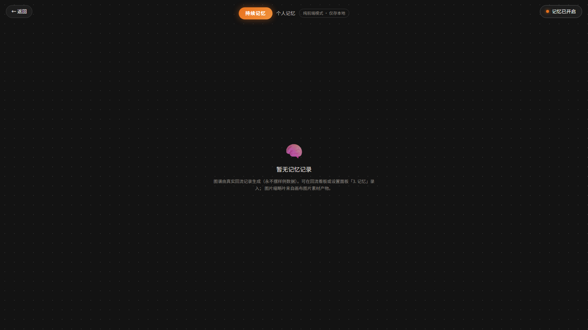
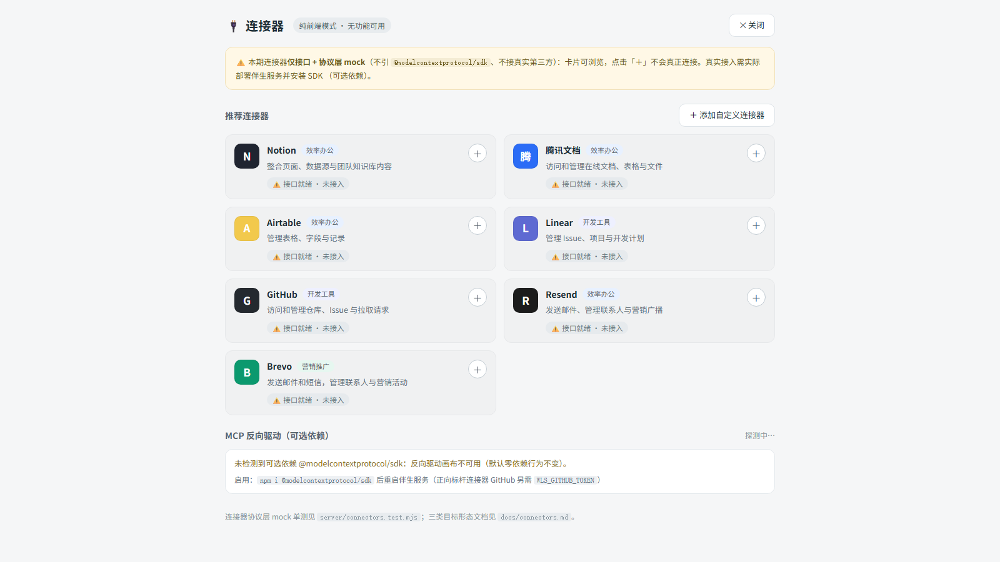
＋ 新项目 / 🗑 删除项目（至少保留一个）；@modelcontextprotocol/sdk 时 /healthz 报 mcp:'ready'，画布工具条出现
「🤖 MCP 已就绪」徽章；editor.run 批量应用；
同时把画布拓扑镜像推送给服务端供 Agent 读取；接口细节见 mcp.md。
localStorage 键 weblockshot.language），脏值一律回落中文；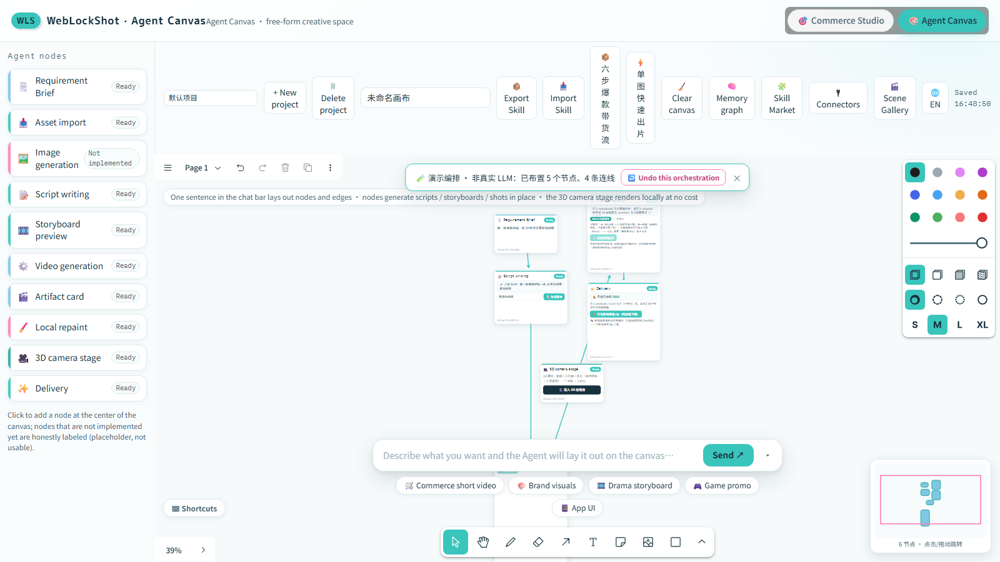
WLS_STORAGE=sqlite 伴生服务后升级为服务端记忆。主手册：HOW_TO_USE.md · 画布线分册：HOW_TO_USE.canvas.md English: HOW_TO_USE.commerce.en.md
进入方式：顶栏「🎯 带货工作台」或深链 ?view=sell。
点击顶部导航的「🛒 电商全链路工作流」，按工业化步骤执行。每个环节都有严格 Schema 约束。
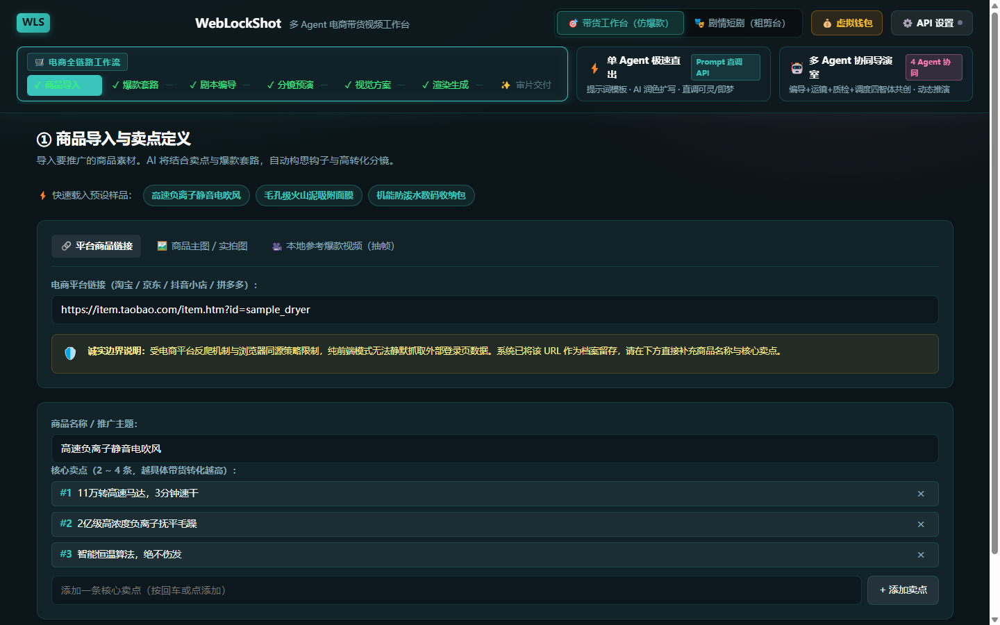
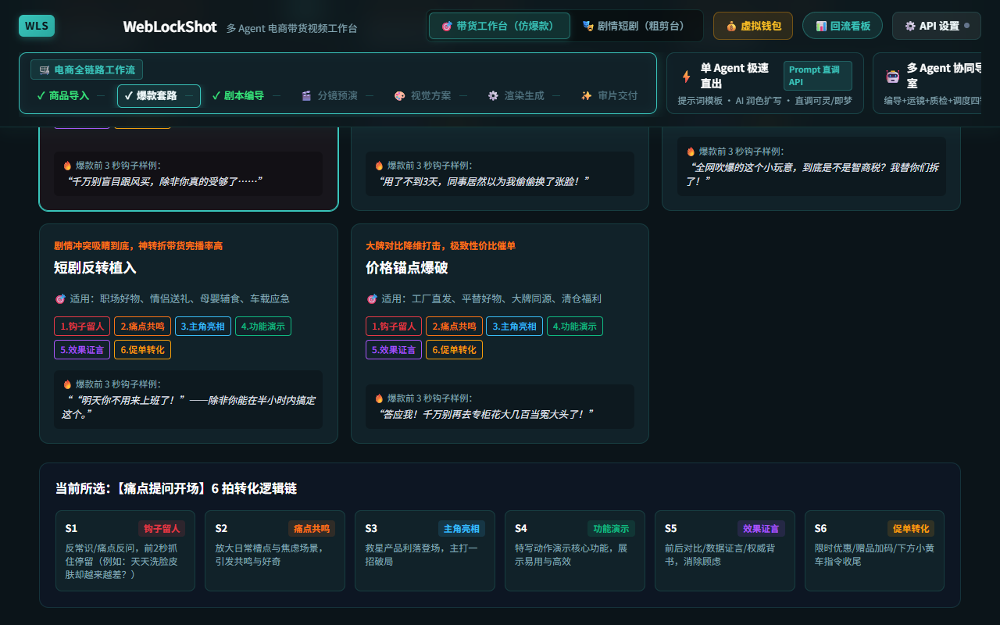
内置经百万播放验证的 5 套 6 镜带货套路：
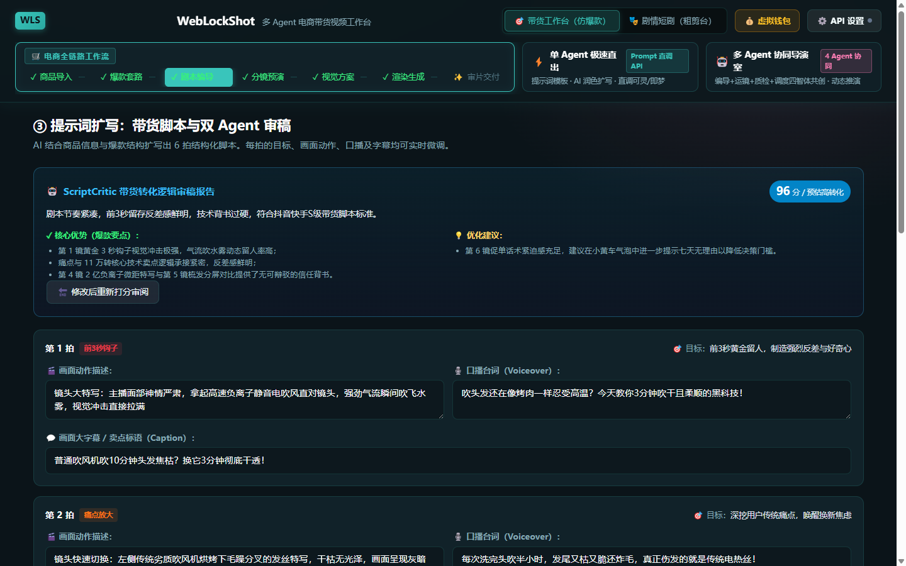
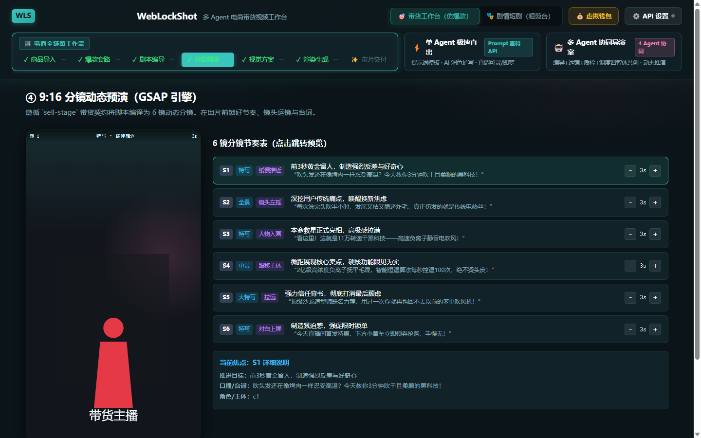
sell-stage 动态舞台基于 GSAP 进行 9:16 全真视觉模拟；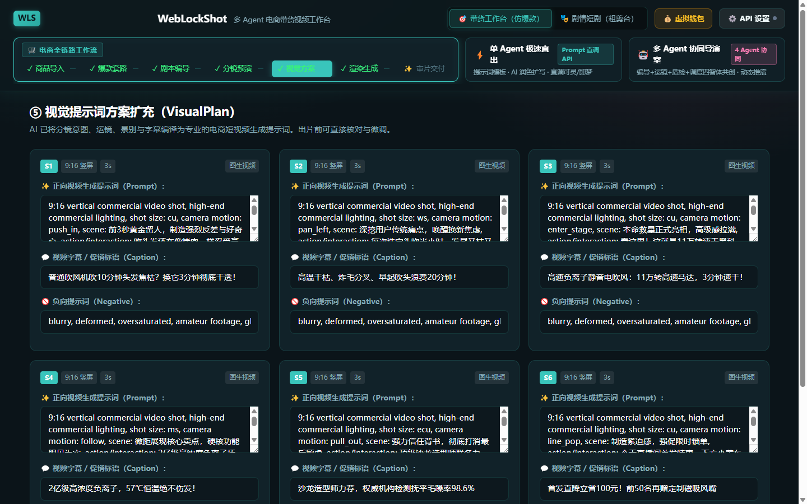
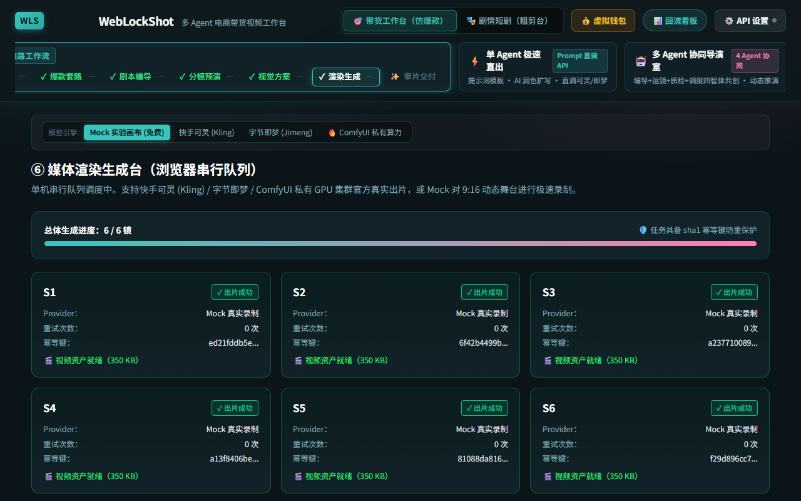
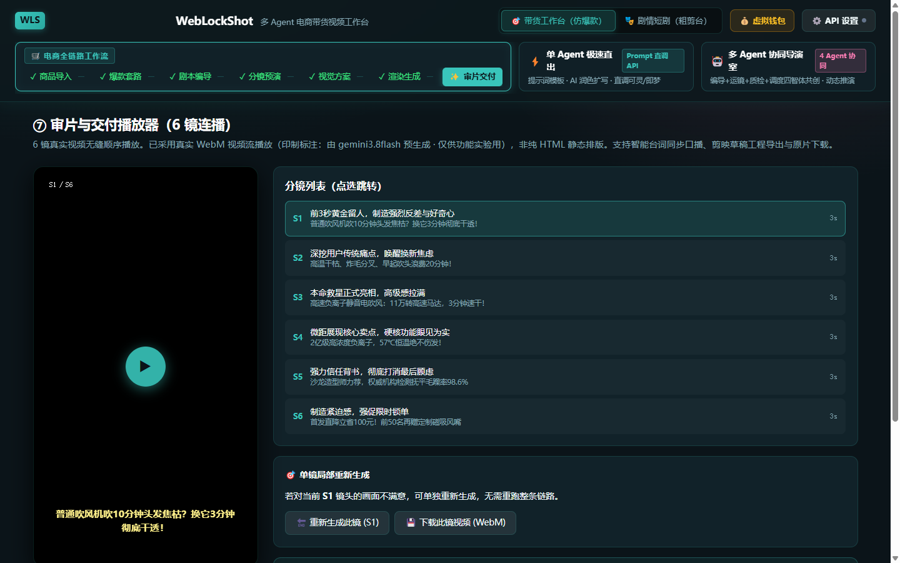
draft_content.json，或下载含全部素材的完整 zip 包；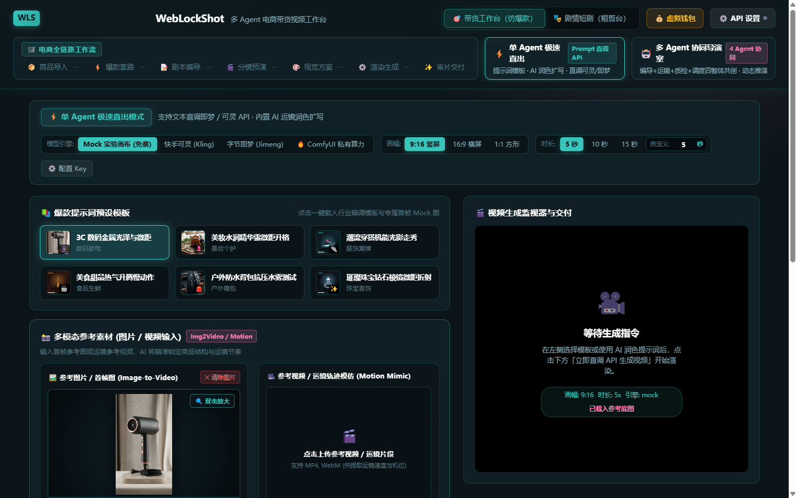
适合单镜头快速实验与图生视频：
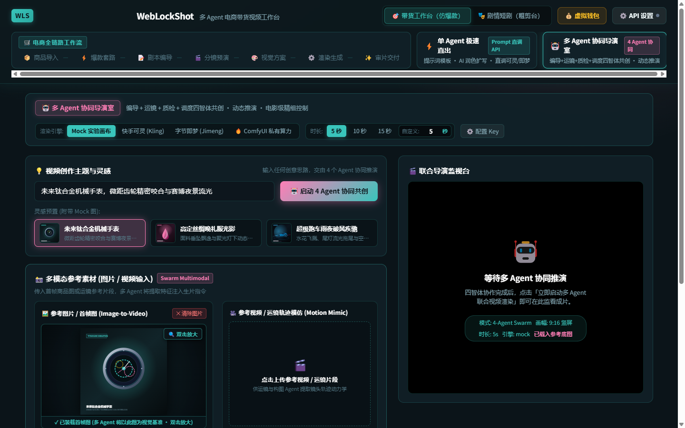
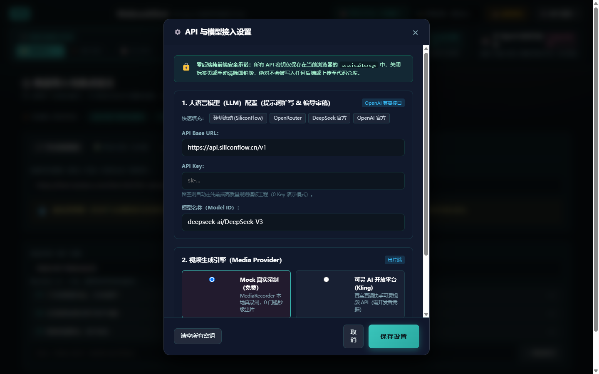
点击右上角「⚙️ API 设置」。引擎共 6 个选项：
| 引擎 | 凭据 | 计费 | 验证层级 |
|---|---|---|---|
| Mock 实验画布 | 无需 | 0 灵感币 | ✅ 本机验证 |
| 快手可灵 (Kling) | 裸 Key（Bearer）或 JSON {"ak","sk"}（官方 JWT 签名） |
~10 币/镜 | ✅ 契约验证 / ⏳ 待真实环境 |
| 字节即梦 (Jimeng) | 裸 Key 或 JSON {"ak","sk"}（火山 V4 HMAC-SHA256 签名） |
~8 币/镜 | ✅ 契约验证 / ⏳ 待真实环境 |
| 🔥 ComfyUI 私有算力 | Base URL（本地/局域网） | 0 接口费 | ✅ 本机验证 |
| Runway (Gen-4) | Bearer API Key | 按官方积分 | ✅ 契约验证 / ⏳ 待真实环境验证 |
| Luma (Dream Machine) | Bearer API Key | 按官方积分 | ✅ 契约验证 / ⏳ 待真实环境验证 |
海外引擎为「契约先行」：请求体 / 端点 / 请求头 / 轮询状态映射 / 错误文案全部按官方文档实现， 并由
test/fixtures/runway|luma/+src/media/__tests__/providerContract.test.ts锁定； 但尚未在真实账号下跑通出片，UI 与文档均如实标注。未填 Key 时不会发起任何请求， 而是给出「未检测到 … API Key」的明确提示。如需自建网关，可设置 sessionStorageweblockshot.runway_base/weblockshot.luma_base覆盖 Base URL。
--listen）：bash
python main.py --listen 127.0.0.1 --port 8188
http://127.0.0.1:8188）→ 点「🔍 测试连接 (Ping GPU)」→ 返回显卡型号与可用显存。在最后一步「✨ 审片交付」点击「📥 导出剪映电脑版草稿工程 (draft_content.json)」。
track_video：6 镜视频无缝顺排；
- track_audio：每镜配音与视频起止点微秒吻合；
- track_text：带货花字，第 1 镜黄金钩子预设黄色高亮与更大字号；source_timerange 与 target_timerange，杜绝黑帧与音频爆音重叠。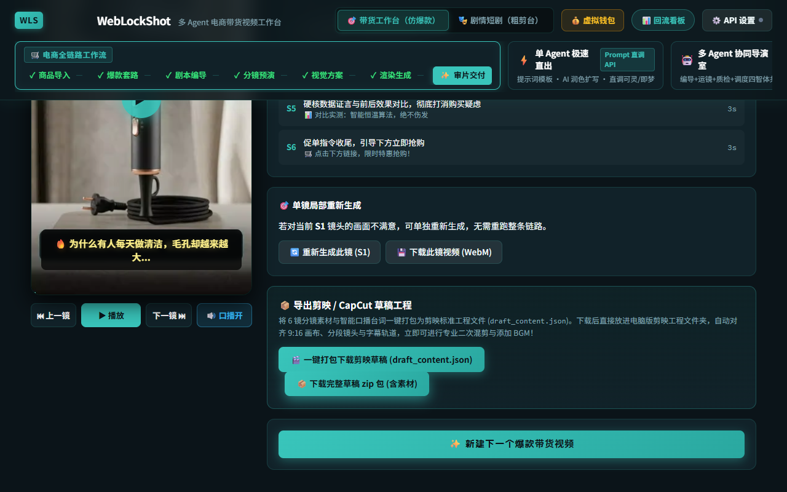
在「✨ 审片交付」页点击「📦 下载完整草稿 zip 包 (含素材)」，包内：
draft_content.json / draft_meta_info.json：标准草稿工程（素材路径已改写为相对 assets/...）；assets/：已生成的分镜视频素材与可选旁白音频；README-使用说明.txt：本包素材清单（缺失素材如实列出）与导入步骤。导入：
<工程名>_剪映草稿.zip；%LOCALAPPDATA%\JianyingPro\User Data\Projects\com.lveditor.draft\<草稿名>\）；draft_content.json、draft_meta_info.json 与 assets/ 复制进去（同名覆盖）；伴生服务在线时，页面会出现「📤 发送到伴生服务落盘」按钮，一键解压到本地草稿目录（见主手册伴生服务章节）。
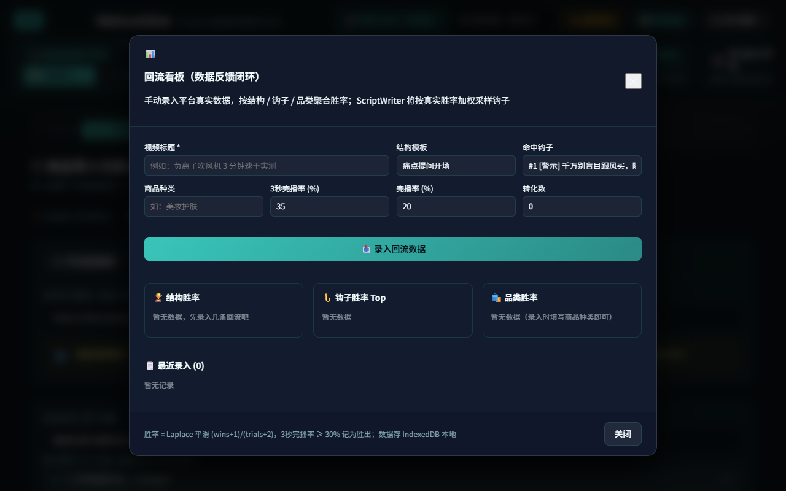
(胜出次数 + 1) / (样本数 + 2)，其中 3 秒完播率 ≥ 30% 记为一次「胜出」；数据仅存本地浏览器 IndexedDB，不上传任何服务器。画布的记忆系统与这里共用同一套聚合。
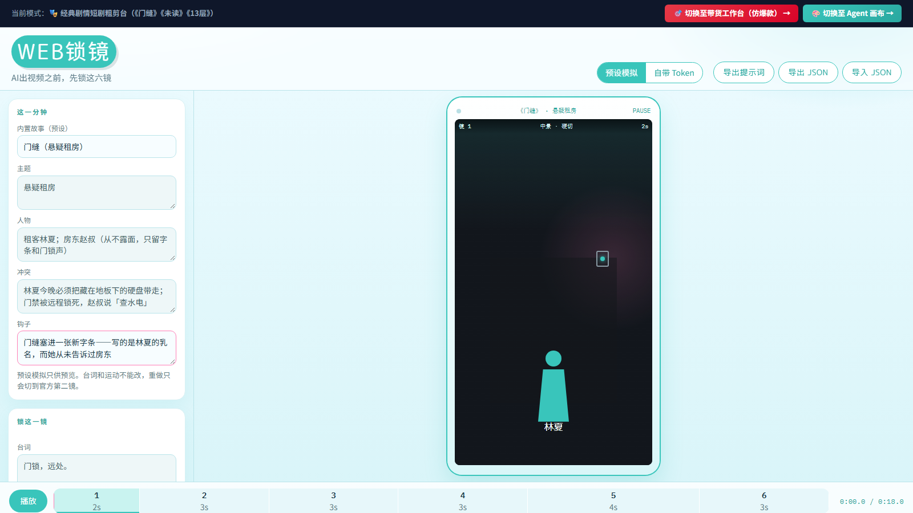
?view=drama；npm run verify:providers -- --kling-key=AK:SK --jimeng-key=AK:SK；